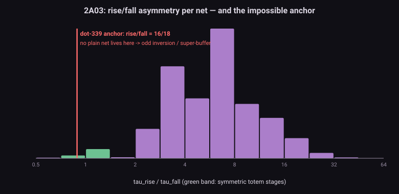
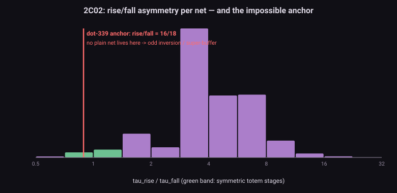
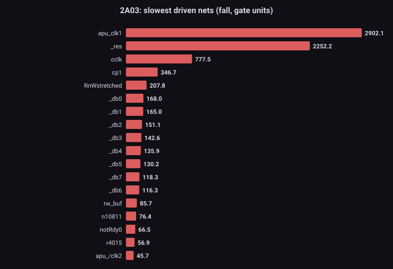
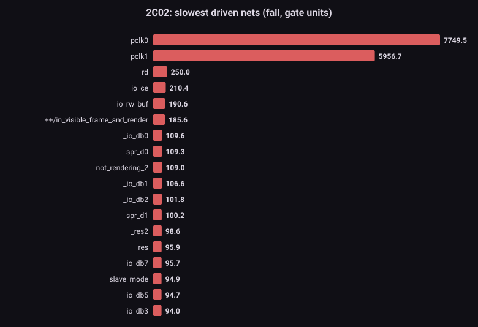

The problem問題 Zero-delay settling, and the four shims it cost零延遲收斂,和它欠下的四顆 shim
Settle-to-quiescence propagates every change to its fixed point within one half-cycle — 23.3 ns of real time compressed to zero. Four accuracy-campaign bosses were exactly this abstraction leaking: dot-339 (rendering-enable arrives 16/18 hc late, rise/fall), even_odd (16 hc), ALERead (a $2007 access lands one CPU cycle early without its 24 hc), BGSerialIn (16 hc at the shifter-reload boundary). Each got a shim with a hand-measured constant. The constants are correct — but they were measured, one test at a time. The question of this study: can the die itself predict them, so tests go back to verifying instead of calibrating?
settle-to-quiescence 在一個半週期之內把所有變化傳到不動點 —— 23.3 ns 的真實時間被壓成零。精度戰役的四個魔王正是這個抽象在漏:dot-339(渲染致能晚到 16/18 hc,rise/fall)、even_odd(16 hc)、ALERead(少了 24 hc,$2007 存取早一個 CPU cycle 落地)、BGSerialIn(shifter-reload 邊界 16 hc)。每顆都配了一個手工量測常數的 shim。常數是對的 —— 但它們是量出來的,一顆測試一顆測試地量。本研究的問題:晶粒自己能不能預測它們,讓測試回到驗證、不再校準?
The recipe配方 One formula, fed by the first two studies一條公式,吃前兩份普查的輸出
tau(net) ≈ ( R_driver + R_wire/2 ) × C_net
C_net = Σ polygon-area × layer-weight + Σ gate W×L ← study #1 (M2)
R_driver = 20 kΩ / S, S = W/L of the strongest pull-down ← study #2 (M1)
(rise side: S = the audit-derived depletion load: 0.58 / 0.95)
R_wire = Σ sheet-R × squares; squares from each polygon's
rectangle-equivalent L/W (area + perimeter → quadratic)Era priors (Mead & Conway, ~3–6 µm NMOS): sheet resistance poly ≈ 25 Ω/sq (the delay killer), diffusion ≈ 15, metal ≈ 0.05; Ron ≈ 20 kΩ/S. Absolute farads are unknowable from polygons, so every τ is reported in gate units — the median driven net ≡ 1.0. Ranking and binning are scale-free; the five measured anchors are what pin gate-units to nanoseconds (era cross-check: one gate unit should land at 2–5 ns, i.e. ~0.1–0.2 hc — which makes an 8-unit island ≈ 1–2 hc, exactly the annotation-worthy range).
時代先驗(Mead & Conway,~3–6 µm NMOS):片電阻 poly ≈ 25 Ω/sq(延遲殺手)、diffusion ≈ 15、metal ≈ 0.05;Ron ≈ 20 kΩ/S。多邊形算不出絕對法拉,所以所有 τ 都以「gate 單位」呈報 —— 受驅動網的中位數 ≡ 1.0。排名與分級與尺度無關;五個實測錨點負責把 gate 單位釘到奈秒(時代交叉檢核:一個 gate 單位應落在 2–5 ns,即 ~0.1–0.2 hc —— 那 8 單位的島就 ≈ 1–2 hc,恰好是值得標註的量級)。
Results結果 The slowest nets confess: it was the interface all along最慢的網自己招供:從頭到尾都是介面
| 2A03 (CPU+APU) | 2C02 (PPU) | |
|---|---|---|
| driven nets binned分級的受驅動網 | 4,097 | 7,246 |
| negligible / ordinary / slow可忽略 / 普通 / 慢 | 1,084 / 2,059 / 716 | 383 / 5,478 / 1,023 |
| delay-island candidates (>8 units)延遲島候選(>8 單位) | 238 (5.8%) | 362 (5.0%) |
| median rise/fall asymmetry中位 rise/fall 不對稱 | 6.43× | 3.89× |
| near-symmetric nets (totem band)近對稱網(推挽帶) | 97 | 124 |
| nets that rise faster than fall (≤16/18)rise 快過 fall 的網(≤16/18) | 17 / 3,499 | 12 / 2,925 |
| pass-chain nets (depth ≥ 2, N²-risk)pass 串鏈網(深度 ≥ 2,N² 風險) | 223 | 178 |
Read the leaderboards讀排行榜
- 2C02's slowest driven nets: the pixel clocks (
pclk0/pclk1— fanout monsters, known super-buffer overestimates), then_rd,_io_ce,_io_rw_buf,_io_db0–2— the CPU↔PPU interface, ranked slowest on the die by pure geometry. The 24 hc cross-chip family (ALERead, dot-339, even_odd, BGSerialIn) just received its physical background check. - 2C02 最慢受驅動網:像素時鐘(
pclk0/pclk1—— 扇出怪物,已知的 super-buffer 高估案)之後,就是_rd、_io_ce、_io_rw_buf、_io_db0–2—— CPU↔PPU 介面,被純幾何排成全晶粒最慢。24 hc 跨晶片家族(ALERead、dot-339、even_odd、BGSerialIn)剛拿到它的物理身家調查。 - 2A03's:
apu_clk1(the very clock whose closing edge races the DMC latch shim),_res,cclk/cp1,RnWstretched, and the_db0–7pad drivers. Watch-list bonus:reshas no pull-down at all and a rise of ~303 units — the external-RC reset story, rediscovered by the binner. - 2A03 的:
apu_clk1(DMC latch shim 賽跑的正是它的關門沿)、_res、cclk/cp1、RnWstretched、以及_db0–7pad 驅動級。watch 名單彩蛋:res根本沒有下拉,rise ~303 單位 —— 重置腳的外部 RC 故事,被分級器自己重新發現。 - The M6 anchors, individually:
ale= 13.8 / 13.8 — perfectly symmetric (it is the 7-up/9-down pad totem M1 found at S 13:13) and slow;io_db0= 31 units, the slowest of the open-bus family;rendering_1= rise 19.6 / fall 5.7 — asymmetric the normal NMOS way. - M6 錨點逐顆看:
ale= 13.8 / 13.8 —— 完美對稱(正是 M1 找到的 7 上/9 下 pad 推挽,S 13:13)而且慢;io_db0= 31 單位,open-bus 家族裡最慢;rendering_1= rise 19.6 / fall 5.7 —— 以正常NMOS 的方式不對稱。






The impossible anchor不可能的錨點 16/18: now a quantified contradiction16/18:現在是一個量化的矛盾
The dot-339 campaign measured rendering-enable propagation at 16 hc rise / 18 hc fall — rise faster. Ratioed NMOS says that's backwards: the weak depletion load charges slowly, so plain nets rise 4–7× slower (both dies' medians confirm: 6.43× and 3.89×). The census makes the contradiction precise: of 6,424 nets with both paths, only 29 (0.45%) can rise at least as fast as they fall — and they are totem/super-buffer stages, not ordinary logic. So the measured "16/18" cannot be the raw behaviour of the annotated node. Two candidate explanations, both checkable: the observation point sits an odd number of inversions from the switching source (parity flip: its rise is the source's fall), or the path runs through a super-buffer (one of the 221 near-symmetric stages). Next tool in the queue does the inversion-count walk on the actual ren_en path — a clean falsifiable test of the whole geometric framework.
dot-339 戰役量到渲染致能的傳播是 rise 16 hc / fall 18 hc —— rise 比較快。比例式 NMOS 說這是反的:弱 depletion 負載充電慢,普通網的 rise 應該慢 4–7×(兩顆晶粒的中位數作證:6.43× 與 3.89×)。普查把矛盾變精確:6,424 張雙路網裡,只有 29 張(0.45%)能 rise 不慢於 fall —— 而且它們全是推挽/super-buffer 級,不是普通邏輯。所以實測的「16/18」不可能是被標註節點的原始行為。兩個候選解釋,都可檢驗:量測點離切換源隔了奇數次反相(奇偶翻轉:它的 rise 是源頭的 fall),或路徑經過 super-buffer(221 張近對稱級之一)。佇列裡的下一隻工具,就是對真實 ren_en 路徑做反相計數走訪 —— 整個幾何框架的一次乾淨可證偽測試。
So what所以呢 From four hand constants to one data file從四個手工常數,到一個資料檔
- The map is small enough to own. ~600 island candidates across both dies (5.3%) is an annotatable list, not a simulation regime. The sidecar plan stands: bins → draft annotations → the five anchors regress the single global scale → tests verify.
- 地圖小到可以擁有。兩顆晶粒共 ~600 個島候選(5.3%),是一張可標註的清單,不是一種模擬型態。sidecar 計畫成立:分級 → 標註初稿 → 五錨點回歸唯一全域尺度 → 測試只驗不校。
- What retires here is numbers, not shims. dot-339 / even_odd / AleReadMux / BgSerialReload keep their event-level mechanism (that architecture is proven); M3's deliverable is their constants moving from hand-measured magic into a physics-derived data file — plus the ranked list of which un-shimmed nets to watch next.
- 這裡退役的是數字,不是 shim。dot-339 / even_odd / AleReadMux / BgSerialReload 保留事件級機制(那個架構已被證明);M3 交付的是它們的常數從手工量測的魔法,搬進物理推導的資料檔 —— 外加一張排序清單:下一批該盯的未修網。
- Engine cost: still zero. Everything here is load-time (or offline). The event queue stays the shim-chain pattern the hot path already tolerates at 0 measurable cost.
- 引擎成本:仍然零。這裡的一切都在載入期(或離線)。事件佇列維持 shim 鏈模式 —— 熱路徑已實測零感的那款。
Honest limits誠實極限 What this binner cannot say這個分級器說不了的事
- Gate units, not nanoseconds. Absolute scale needs the anchor regression; until then, bins are relative. The era cross-check (1 unit ≈ 2–5 ns) is a sanity band, not a measurement.
- gate 單位,不是奈秒。絕對尺度要靠錨點回歸;在那之前分級是相對的。時代交叉檢核(1 單位 ≈ 2–5 ns)是理智帶,不是量測。
- Clock trees and super-buffers are overestimated — the model assumes the strongest direct pull-down is the driver; staged buffers drive far harder (pclk0's 7,750 units is an upper bound, not a claim).
- 時鐘樹與 super-buffer 被高估 —— 模型假設最壯的直接下拉就是驅動者;多級緩衝實際壯得多(pclk0 的 7,750 單位是上界,不是主張)。
- Pass chains flagged, not solved (401 nets at depth ≥ 2 need the N(N+1)/2 correction); bootstrap nodes overestimate; 2D extraction as before.
- pass 串鏈只旗標、未解算(401 張深度 ≥ 2 的網需要 N(N+1)/2 修正);bootstrap 節點會高估;2D 萃取限制同前兩篇。
- Rise-side strength is the M1 audit's derived constant (0.58 / 0.95), not netlist data — the pull-up hole travels downstream with us.
- rise 側強度是 M1 稽核的反推常數(0.58 / 0.95),不是網表資料 —— 上拉洞跟著我們往下游走。